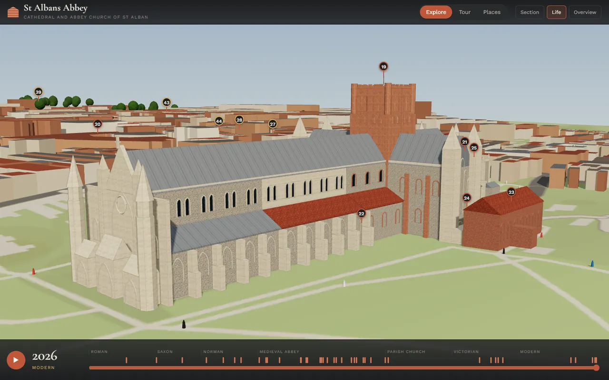
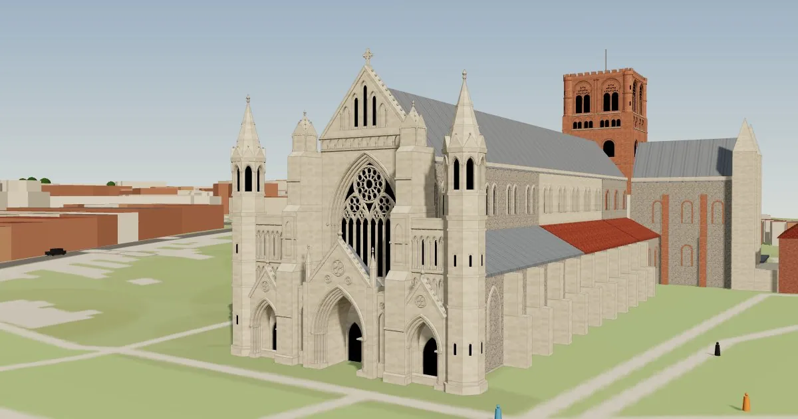
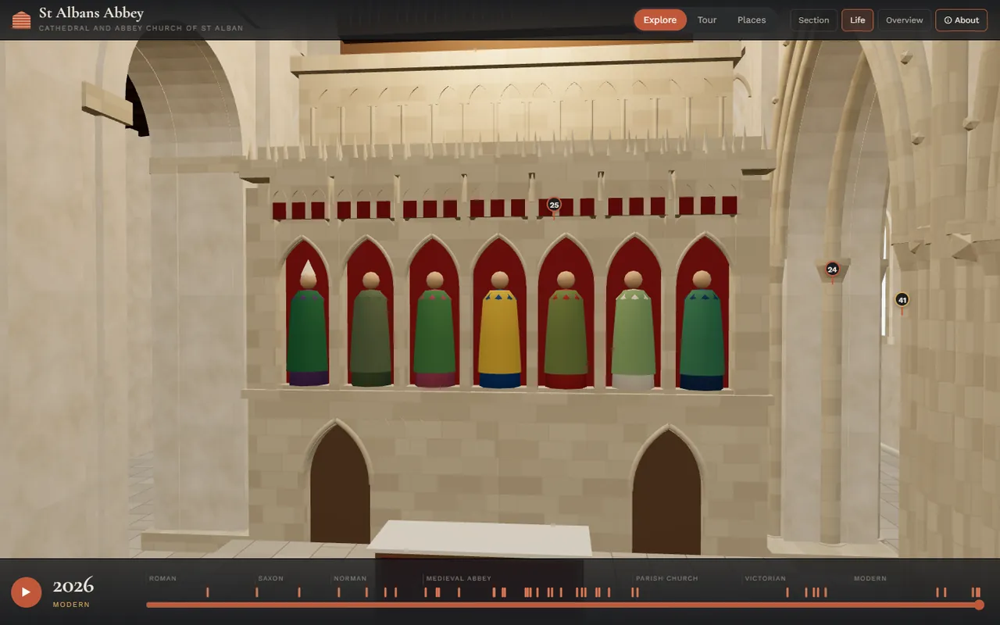
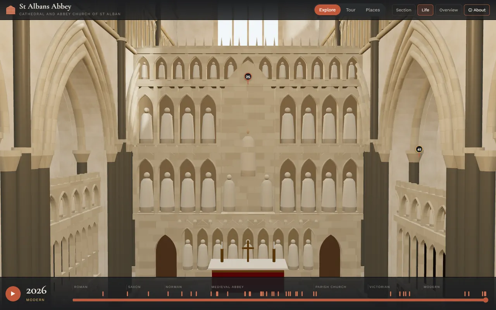
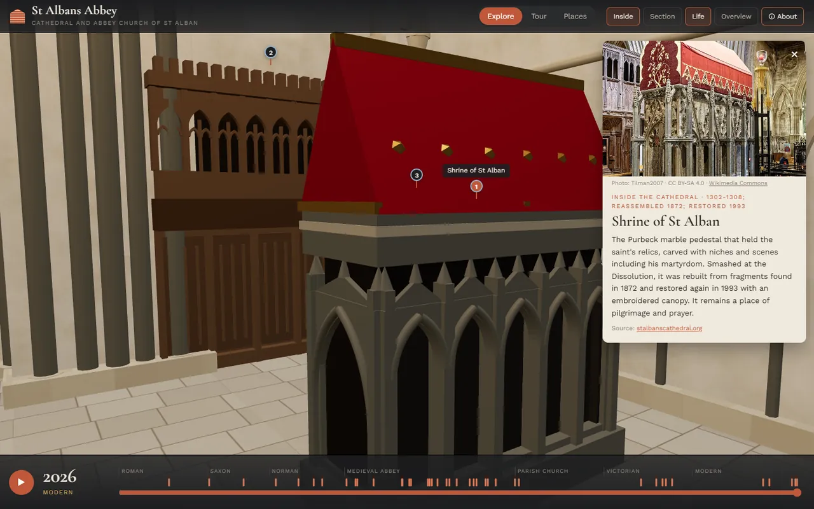
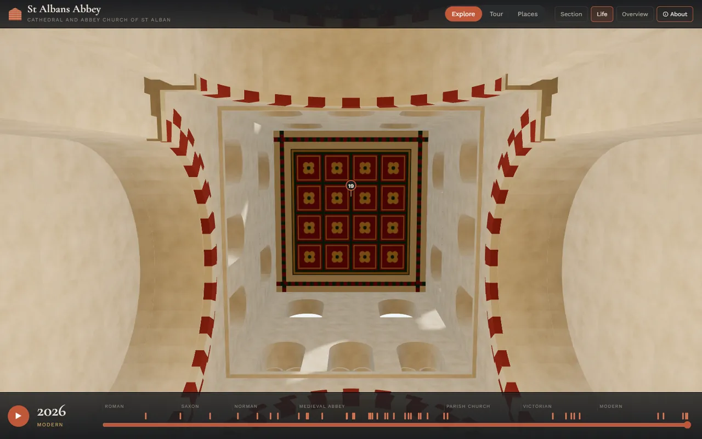
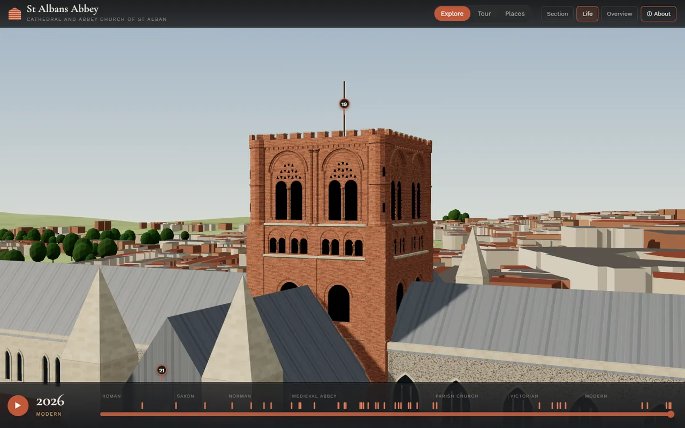
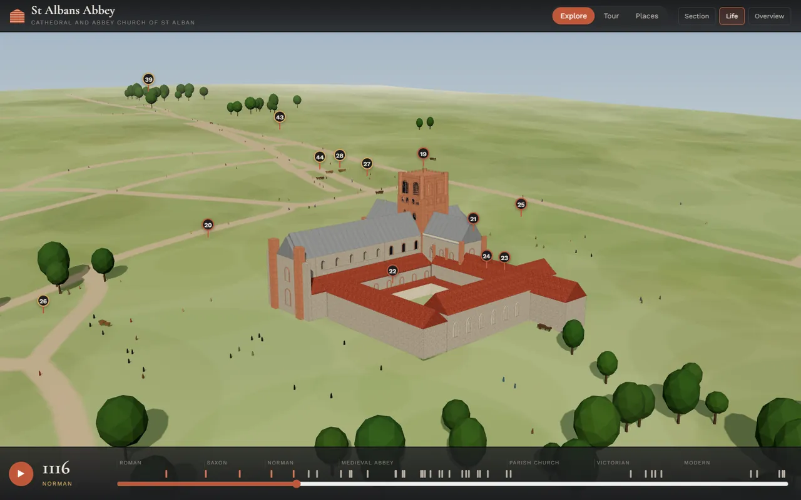

St Albans Abbey
Seventeen centuries on one hill: an interactive 3D model of St Albans Cathedral, its town and Roman Verulamium, with a timeline that builds the abbey century by century. Now you can also step inside and look down the nave towards the altar.

The first version showed the abbey from outside only. This update adds the building's detail and its interior.
- InsideA new Inside button puts you in the nave, looking towards the altar. The arcades follow the real building in three styles: Norman round arches, Early English pointed ones, and the bays on the south side rebuilt in the Decorated style. Above is the painted timber nave ceiling, and the medieval paintings are on the Norman piers.
- FurnishingsThe nave screen with its seven figures, the organ, the choir stalls, the Wallingford screen with its tiers of niches, St Alban's shrine under its canopy, the Watching Loft, Duke Humphrey's chantry and more.
- They follow the timelineMove the slider and the furnishings come and go with history: the shrine disappears in 1539 and returns in 1872, and the pier paintings are hidden from 1560 until 1862.
- West frontLord Grimthorpe's Victorian west front in detail: three porches with stepped, moulded arches on shafts, the great west window with its wheel of twelve petals, the blind arcading and cross on the gable, pinnacled buttresses and octagonal stair turrets.
- Norman towerRoman brick, paired belfry openings on little columns, round angle turrets and battlements. The tower is hollow, so from inside you can look up at the painted lantern ceiling.







- TimelineDrag the slider or press play to watch the abbey being built, rebuilt and surrounded by its town, from Roman Verulamium to today. 40 dated events mark the way.
- Life in each eraPeople and traffic change with the era: Roman ox carts, monks and pilgrims, coaches and Victorian carriages, then cars and buses.
- 44 placesShrines, screens, chantries, the tower, the gateway, Roman remains and the town's old churches, each with a short history, most with a photograph. Choose a place inside the church and you fly inside to see it.
- Section viewCut the building open to see the arcades, the chapels and the roof from inside.
- TourA 9-stop guided tour for a first visit, now with a stop inside, towards the altar.
- Opening sketchWhile the model loads, the abbey is drawn in pencil, line by line.
14 seconds, no sound. Press play on the timeline and the hill changes from Roman town to medieval abbey to today. Recorded on 24 Oct, before the west front and tower detail were added.
The cathedral is modelled from the 1908 Victoria County History ground plan, measured to its scale bar, with John Carter's sections of about 1813, the heights Grimthorpe published, and photographs for the west front, the tower and the interior. Some heights are estimates.
The statues and painted figures are simplified, not portraits. The Lady Chapel and the retrochoir are not modelled inside yet.
Town buildings come from OpenStreetMap and appear on the timeline at estimated dates. The Roman street grid is schematic: only the surviving wall segments are real.
Built in October 2026 by directing an AI agent, in plain JavaScript with three.js. The interior and the detailed west front were added on 25 October 2026.
- HistoryVictoria County History (British History Online), RCHME 1910, stalbanscathedral.org, Historic England, Wikipedia
- Map data© OpenStreetMap contributors, ODbL
- TerrainCopernicus EU-DEM v1.1 via OpenTopoData
- PhotographsWikimedia Commons contributors, credited on each place card (CC BY, CC BY-SA, CC0)
- 3Dthree.js
A personal hobby project, not official and not affiliated with St Albans Cathedral. For interest only: the model is a reconstruction, the figures are simplified, and some dates, heights and the Roman street grid are estimates.